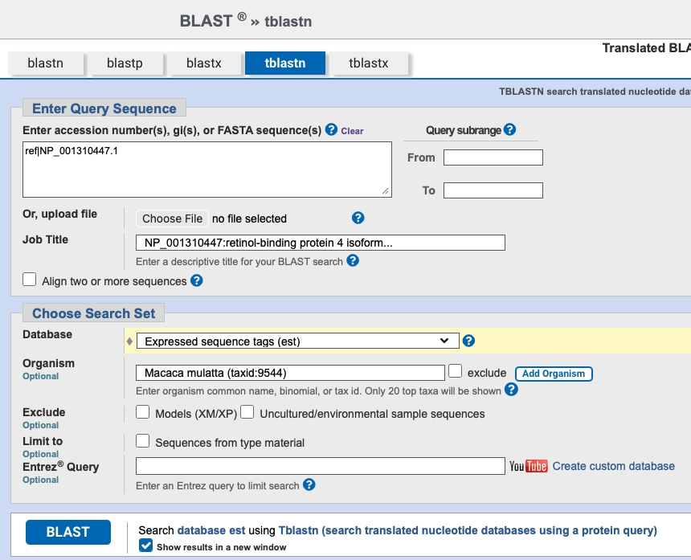
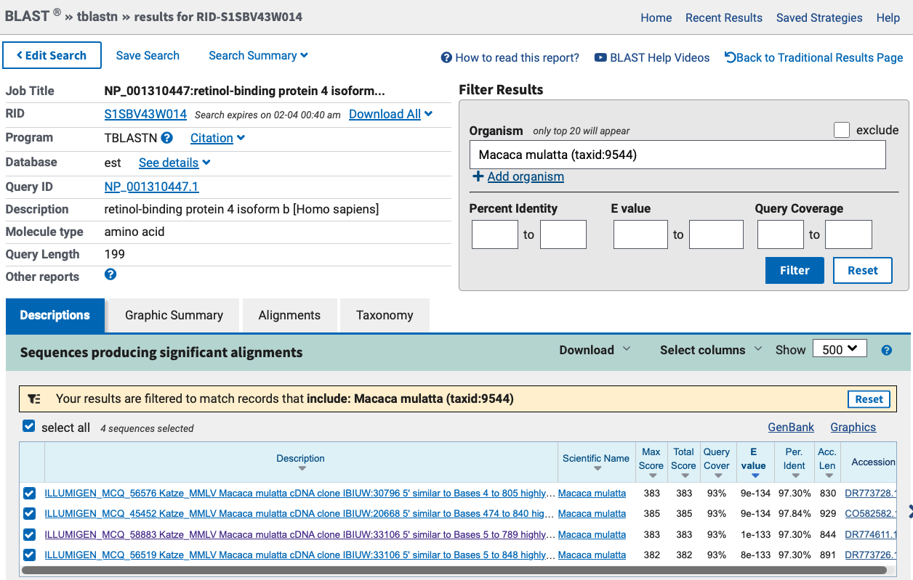
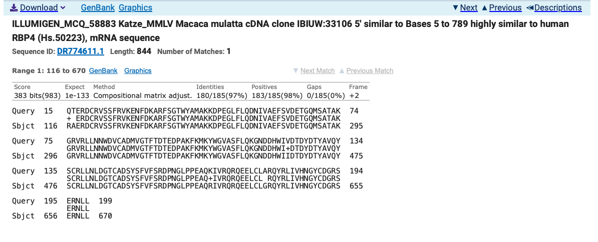
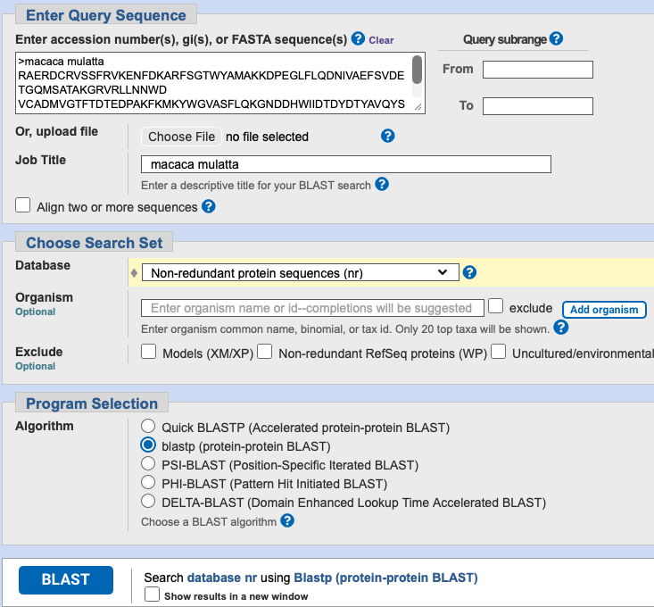
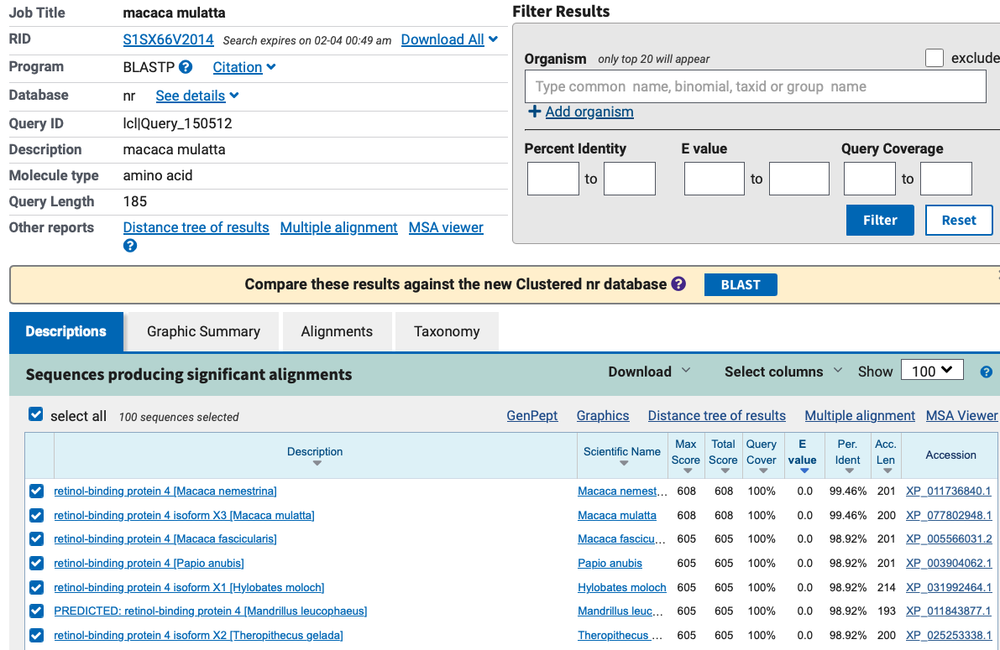
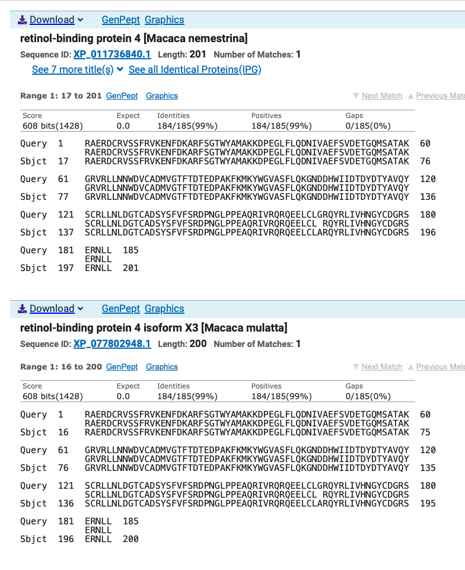

Find a gene project
Q1
Tell me the name of a protein you are interested in. Include the species and the accession number. This can be a human protein or a protein from any other species as long as it’s function is known. If you do not have a favorite protein, select human RBP4 or KIF11. Do not use beta globin as this is in the worked example report that I provide you with online.
Name: retinol-binding protein 4 isoform b
Accession: NP_001310447
Species Homo Sapiens
Function: enables molecular carrier activity IEA
enables protein binding IPI PubMed enables protein-containing complex binding IEA
enables retinal binding IEA
enables retinoid binding IEA
enables retinol binding IBA
enables retinol binding IDA PubMed enables retinol binding IEA
enables retinol transmembrane transporter activity IC PubMed enables retinol transmembrane transporter activity IEA
Q2
Perform a BLAST search against a DNA database, such as a database consisting of genomic DNA or ESTs. The BLAST server can be at NCBI or elsewhere. Include details of the BLAST method used, database searched and any limits applied (e.g. Organism).
Method: TBLASTN 2.17.0+
Database: Expressed Sequence Tags (est)
Organism: Macaca mulatta (taxid:9544)

Chosen match: Accession DR774611.1, a 844 bp mRNA sequence from Macaca mulatta


Alignment details:
ILLUMIGEN_MCQ_58883 Katze_MMLV Macaca mulatta cDNA clone IBIUW:33106 5' similar to Bases 5 to 789 highly similar to human RBP4 (Hs.50223), mRNA sequence
Sequence ID: DR774611.1 Length: 844 Number of Matches: 1
Range 1: 116 to 670GenBankGraphicsNext MatchPrevious Match
Alignment statistics for match #1
Score Expect Method Identities Positives Gaps
Frame
383 bits(983) 1e-133 Compositional matrix adjust. 180/185(97%) 183/185(98%) 0/185(0%)
+2
Query 15 QTERDCRVSSFRVKENFDKARFSGTWYAMAKKDPEGLFLQDNIVAEFSVDETGQMSATAK 74
+ ERDCRVSSFRVKENFDKARFSGTWYAMAKKDPEGLFLQDNIVAEFSVDETGQMSATAK
Sbjct 116 RAERDCRVSSFRVKENFDKARFSGTWYAMAKKDPEGLFLQDNIVAEFSVDETGQMSATAK 295
Query 75 GRVRLLNNWDVCADMVGTFTDTEDPAKFKMKYWGVASFLQKGNDDHWIVDTDYDTYAVQY 134
GRVRLLNNWDVCADMVGTFTDTEDPAKFKMKYWGVASFLQKGNDDHWI+DTDYDTYAVQY
Sbjct 296 GRVRLLNNWDVCADMVGTFTDTEDPAKFKMKYWGVASFLQKGNDDHWIIDTDYDTYAVQY 475
Query 135 SCRLLNLDGTCADSYSFVFSRDPNGLPPEAQKIVRQRQEELCLARQYRLIVHNGYCDGRS 194
SCRLLNLDGTCADSYSFVFSRDPNGLPPEAQ+IVRQRQEELCL RQYRLIVHNGYCDGRS
Sbjct 476 SCRLLNLDGTCADSYSFVFSRDPNGLPPEAQRIVRQRQEELCLGRQYRLIVHNGYCDGRS 655
Query 195 ERNLL 199
ERNLL
Sbjct 656 ERNLL 670Q3
Gather information about this “novel” protein. At a minimum, show me the protein sequence of the “novel” protein as displayed in your BLAST results from Q2 as FASTA format (you can copy and paste the aligned sequence subject lines from your BLAST result page if necessary) or translate your novel DNA sequence using a tool called EMBOSS Transeq at the EBI. Don’t forget to translate all six reading frames; the ORF (open reading frame) is likely to be the longest sequence without a stop codon. It may not start with a methionine if you don’t have the complete coding region. Make sure the sequence you provide includes a header/subject line and is in traditional FASTA format
Chosen Sequence
Fasta Format (sequence taken from BLAST result)
>ILLUMIGEN_MCQ_58883 Katze_MMLV Macaca mulatta cDNA clone
RAERDCRVSSFRVKENFDKARFSGTWYAMAKKDPEGLFLQDNIVAEFSVDETGQMSATAKGRVRLLNNWD
VCADMVGTFTDTEDPAKFKMKYWGVASFLQKGNDDHWIIDTDYDTYAVQYSCRLLNLDGTCADSYSFVFS
RDPNGLPPEAQRIVRQRQEELCLGRQYRLIVHNGYCDGRSERNLLName: ILLUMIGEN_MCQ_58883 Katze_MMLV Macaca mulatta cDNA clone
Species: Macaca Mulatta
Q4
Prove that this gene, and its corresponding protein, are novel. For the purposes of this project, “novel” is defined as follows. Take the protein sequence (your answer to Q3), and use it as a query in a blastp search of the nr database at NCBI. • If there is a match with 100% amino acid identity to a protein in the database, from the same species, then your protein is NOT novel (even if the match is to a protein with a name such as “unknown”). Someone has already found and annotated this sequence, and assigned it an accession number. • If the top match reported has less than 100% identity, then it is likely that your protein is novel, and you have succeeded. • If there is a match with 100% identity, but to a different species than the one you started with, then you have likely succeeded in finding a novel gene. • If there are no database matches to the original query from Q1, this indicates that you have partially succeeded: yes, you may have found a new gene, but no, it is not actually homologous to the original query. You should probably start over.


